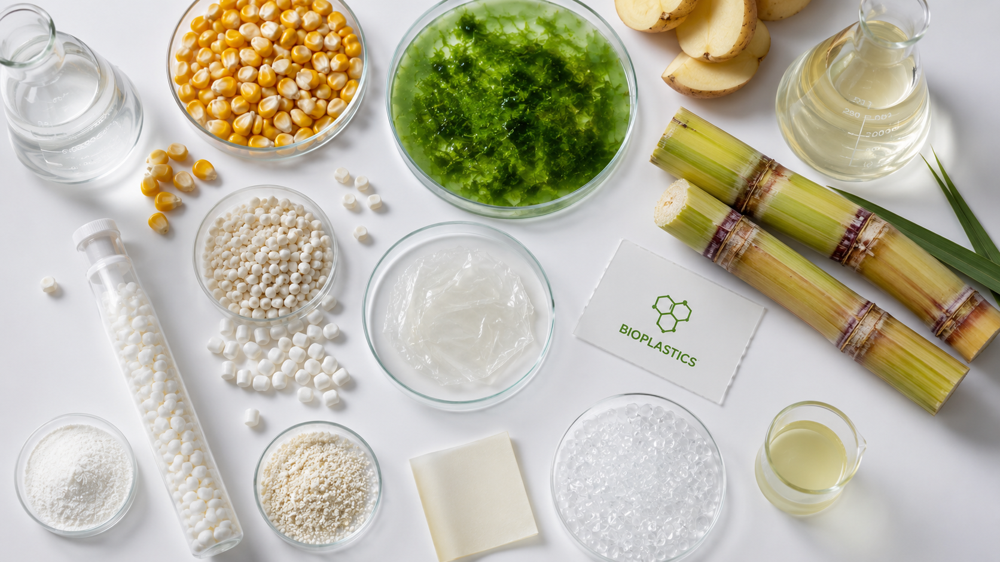
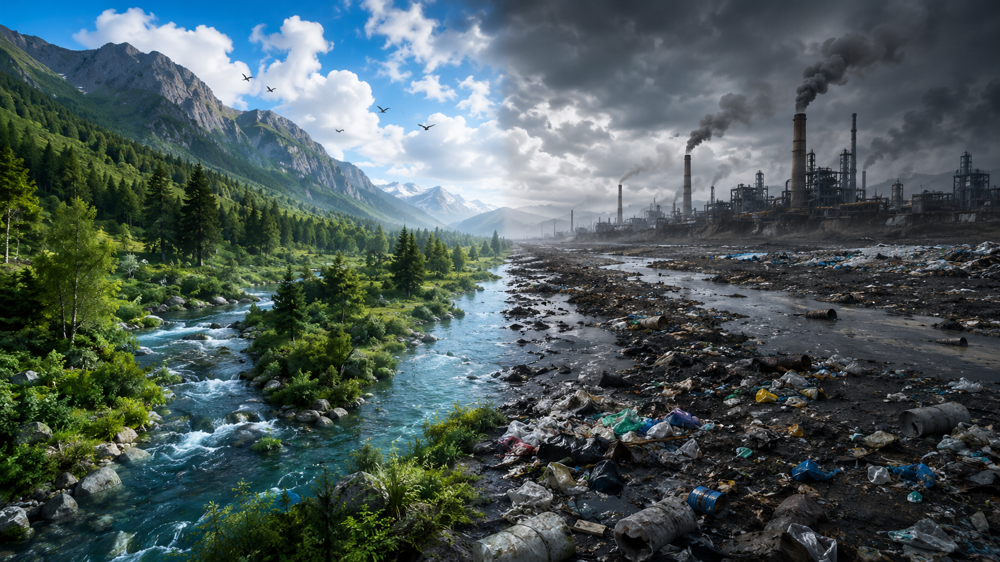
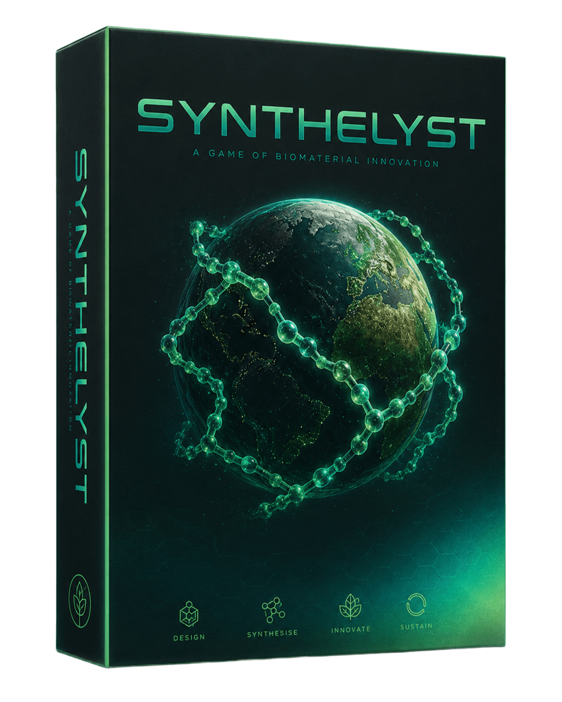
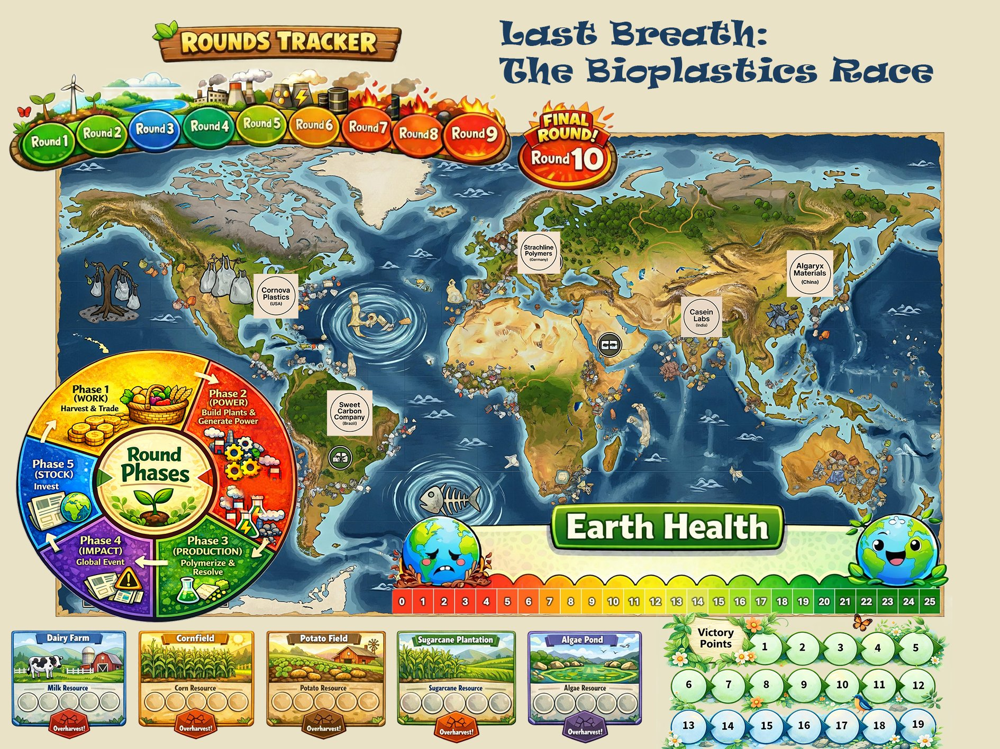

← Back to Catalyst
SYNTHE-
Game 002 · Mid-Heavy Eurogame · Seeking Publisher
SYNTHE-
LYST
A Competitive Eco-Strategy Game
A Competitive Eco-Strategy Game
"Harvest bioplastics from nature's feedstocks. Build power plants. Resolve global crises. Save the Earth — or watch it collapse while someone else wins."
Synthelyst is a cooperative-competitive eco-strategy game set in 2035. Everyone must keep Earth Health above zero. But only one player — the most VP among the survivors — wins. Science, industry, and ecology in tension across 10 rounds.

Mehrad works in a company focused on producing biodegradable bioplastics from sustainable feedstocks. During the fundraising process, he encountered the full complexity of what building a green industry actually means: competing companies jockeying for the same raw materials, government regulations that lag a decade behind the science, investors demanding returns on technology that hasn't scaled yet, and ecological systems that degrade if you harvest too aggressively.
He realised this wasn't just an industry. It was a game — with real stakes, real trade-offs, and no easy answers. Could he capture that tension on a board?
Anita brought her statistical expertise and extensive board game experience to the mechanics. She stress-tested every interaction, optimised the Earth Health system, and helped design the Catalyst Deck — the engine-building heart of the game.
Synthelyst can be positioned as a sustainability ambassador — showing players in visceral, strategic terms how plastic pollution works, how bioplastics can change the equation, and how hard collective action really is. Ideal for school curricula and corporate sustainability programmes.

Earth Health starts at 25 and drops with every unresolved Crisis, every CO₂ token, every round that passes without cooperation. If it reaches zero — all players lose. Immediately. No exceptions.
This is Synthelyst's central tension: you are competing fiercely against other players for VP, while simultaneously depending on them to avert global catastrophe. Free-riding is fatal. Hoarding resources triggers cascading crises. The game models real-world collective action problems — with devastating accuracy.
Only the player with the most VP who has resolved at least one Crisis wins. Winning at the expense of the planet is not an option.
Each company has unique Core Abilities (once per round) and Big Bet abilities (once per game). No two companies play the same way.
Each of Synthelyst's 10 rounds flows through five distinct phases — covering the full industrial cycle from raw material to finished product, from individual action to global consequence. Every phase introduces meaningful decisions that interact with all the others. The order matters. The timing matters. And the planet is always watching.
Gather the raw materials your company needs from shared ecosystems. Resources are limited — and what you take affects what others can access.
Build and operate your energy infrastructure. Every energy decision has an environmental cost — some choices come back to haunt everyone.
Convert your materials into bioplastics. This is where your investment in resources and energy pays off — or exposes the gaps in your strategy.
A crisis strikes. Some are manageable alone. Others demand collective action. Ignoring them costs everyone — including you.
Invest, play cards, and build toward your long-term engine. The decisions made here compound across every subsequent round.
PLA bioplastic. High yield, widely grown. First feedstock to deplete under competition.
Thermoplastic starch. Abundant but energy-intensive to process into stable polymer.
Casein bioplastic. Rare and valuable. Produces premium polymers with high VP yield.
Bio-polyethylene. Brazil's advantage. Fastest production cycle in the game.
PHA bioplastic. Hardest to harvest but zero ecosystem damage. The clean energy of feedstocks.



Synthelyst communicates — through play — exactly why plastic pollution is so hard to solve and why bioplastics matter. A natural partnership for environmental organisations and green brands.
Perfect for GCSE and A-level chemistry curricula covering polymer science, sustainability, and industrial chemistry. Playable in a single school period.
No comparable game exists — a competitive eurogame grounded in real bioplastics science and genuine ecological systems thinking. Entirely novel category.
Sustainability-focused companies (bioplastics producers, chemical companies) could co-brand Synthelyst as a CSR and marketing tool — reaching consumers in a memorable, engaging way.
Prototype complete. Art ready. Rulebook finalised. Actively seeking the right publishing partner.
Contact Us About Synthelyst →